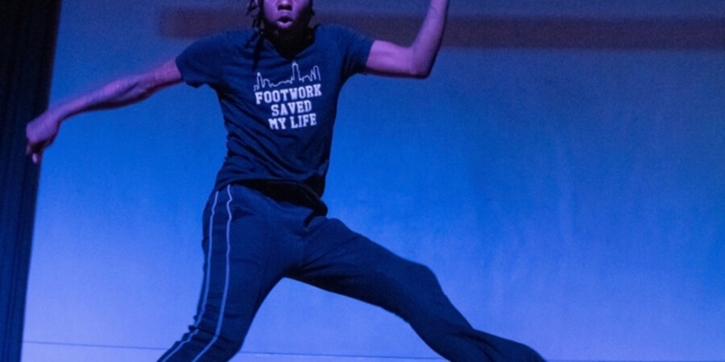

Werkz in the Archive
This participatory evening of film and movement honors the historically black practice of Chicago Footwork.
Join us for a screening, dance cypher, and reflections, featuring films inspired by the work of Dr. ShaDawn “Boobie” Battle, the National Public Housing Museum’s 2023 Artist as Instigator.
Dr. ShaDawn is joined by filmmaker and footworker Stefon Amari Jarrett, filmmaker and Assistant Curator and Registrar jellystone robinson, and Oral History Manager Liú m.z.h. chen. These artists and cultural workers collaborated as part of Sixty Inches From Center’s Chicago Archives + Artists Project to critically examine Chicago Footwork and its ability to hold the stories of public housing told through oral histories collected and preserved in the Museum’s archive.
This culminating workshop mobilizes footwork as an embodied form of archival work and creative way of processing trauma related to housing violence and environmental racism.
FREE. Light bites and refreshments included. Space is limited. Please register in advance.
Schedule
5:30 pm doors open, light bites, museum open for exploration
6 pm program begins